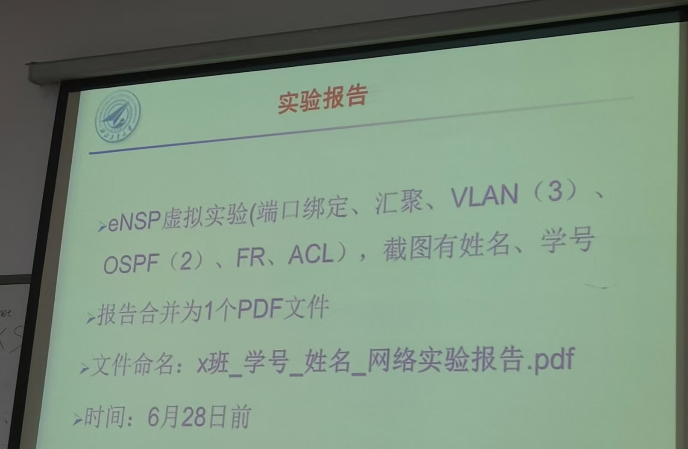
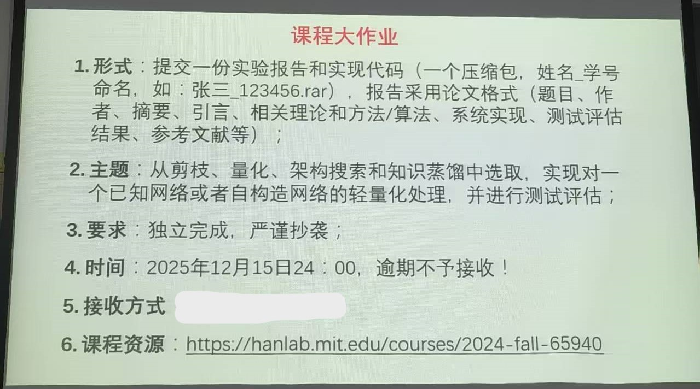
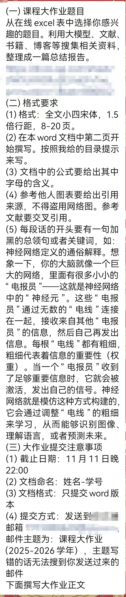
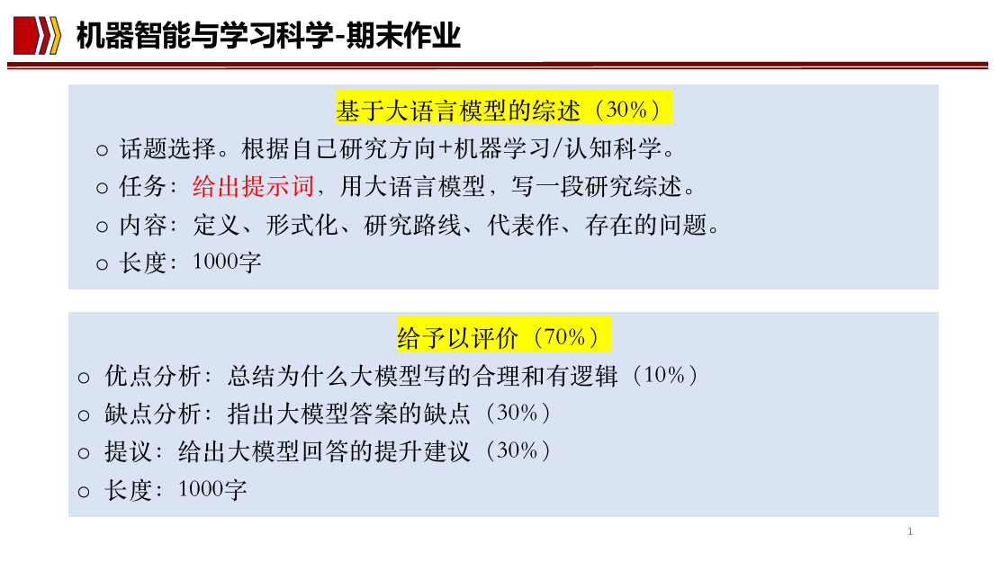
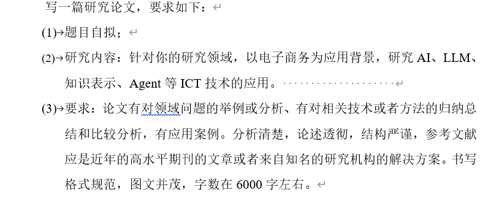

数学课
我选择的数学课是《矩阵论》、《数理统计》，关于数学课建议还是好好学，没有什么捷径，这也是唯二需要努力的课程。下面的资料是别人推荐给我的。
思政课
思政课包括《新时代中国特色社会主义理论与实践》、《自然辩证法概论》、《工程伦理学》。思政课都是开卷考试、论述题，考前去打印店买点资料，准备好课本，考试直接抄就可以了。
实验课
我的实验课是《计算机实用网络通信技术》，包括线下操作和仿真操作两部分，线下操作对着实验教程一步步做就可以了，仿真操作是期末大作业。

选修课
选修课建议选择考查课，毕竟谁也不想期末的时候多几门考试。
轻量化深度学习技术

深度学习中的数学理论

Machine Intelligence and Learning Science

计算机智能感知系统概论
课程要求：期末交一篇和自己研究方向相关的论文即可（原创）。
视觉目标检测
课程要求：根据选择的主题以及课上汇报的内容，写一篇综述。（小组作业）
Data Mining（现更名《图神经网络》）
电子商务技术
